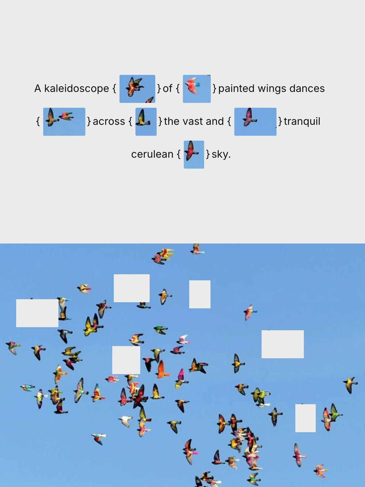
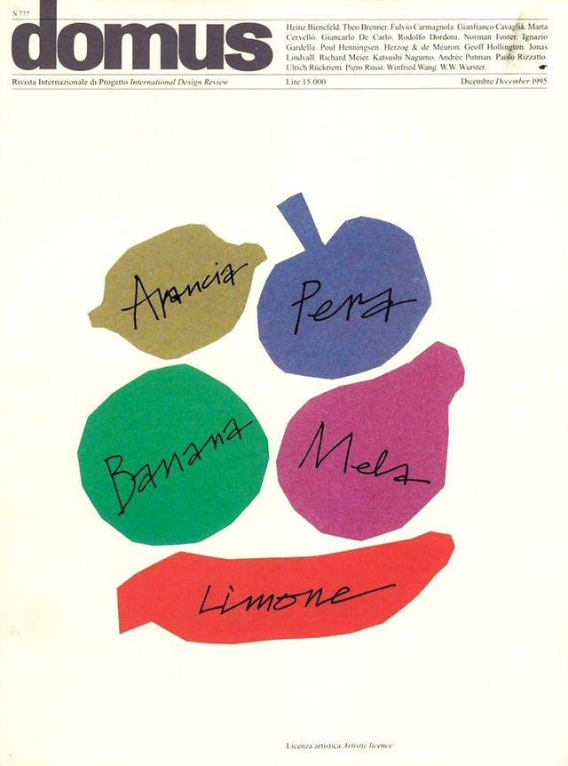

Ingredients:
- 1 English cucumber (about 11 oz / 300 g) , tough skin removed
- 3 cloves of garlic, crushed and minced
- 1 tablespoon Chinkiang vinegar (or rice vinegar)
- 1 tablespoon light soy sauce (or soy sauce)
- 1 teaspoon sugar
- 1/2 teaspoon salt
- 1/2 teaspoon sesame oil
- 2 teaspoons homemade chili oil (or store-bought chili oil) (optional)
- 1 tablespoon Lao Gan Ma Chili Crisp (optional)
Recipe:
- Dry the cucumber with a paper towel. Place the cucumber on a large cutting board and carefully use a cleaver to crush it. If you don't own a cleaver, a meat pounder will work as well. Then cut it into bite-size pieces and place them into a bowl.
- Add the garlic on top of the cucumber.
- Combine the vinegar, soy sauce, sugar, salt and sesame oil in a small bowl and mix well.
- Right before serving, pour the sauce mixture over the cucumber and mix well. (Do not add the sauce beforehand. It will cause the cucumber to lose water, and the sauce will be diluted.)
- (Optional) To give the salad an extra kick, you can drizzle some chili oil or add a spoonful of chili crisp. It makes the dish addictively good.
Sample Imagery:


Recipe Websites:
- NYT Cooking
I liked the layout of the recipe especially with there being 2 columns instead of one. You can see the ingredients at the same time as the instructions without scrolling up or down, although I don't think this would be possible for mobile devices.
- doobydobap
I really liked how the author added a short story/description for the recipe at the beginning of the page, as well as an option to jump to the recipe if they wanted to jump to the baking. It gave a nice personal touch to the recipe, and would make it a bit more "fun" for the person reading it if they weren't planning on baking at the moment.
- cafemaddy
I thought the gifs for each step was a fun way to add some motion/interactivity to a static page, as well as giving clarity on what the food should be looking like for each step. Sometimes, words can only do so much, and it's nice to have a visual reference for a task that relies so heavily on visual cues.
Non-Recipe Websites
- Strange Time: An exhibition of novel timekeeping
This website essentially encapsulates a physical website in a digital space, with interactive "label" buttons on the "walls" that jump to another section on the page with the full label. I thought this interactivity as well as the use of a photo as a "physical space" was really cool and easy to understand.
- optical toys
I thought this fun website of optical illusions was organized in a pretty cool way (horizontal scrolling, as well as a plethora of interactions through buttons and hovers for the different "toys"). It just has an overall nice style throughout that's easy to follow with clear instructions and consistent layout.
- here-there
The visual controls with the background color and font-size are what stood out to me at first (I thought it was a nice way to make the content of the website accessible to users.) Also the consistent design language of rounded shapes/circles as buttons made it pretty easy to pick up how to use the website.